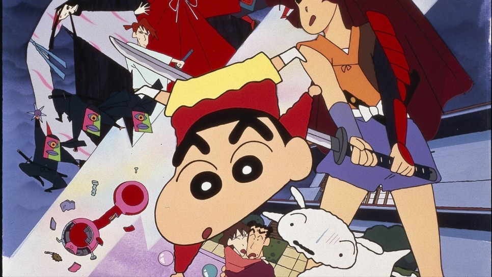

- 만화제목
- 설명
- 등장인물
짱구는 못말려
짱구는 못말려는 1990년 8월에 나온 우스이 요시토의 연재 만화 크레용 신짱을 원작으로 한 애니메이션이다. 대한민국과 일본, 중국, 대만, 인도를 비롯한 아시아 지역과 스페인을 비롯한 유럽, 그리고 미국까지 전세계 40여개국에 수출, 방영되었으며 연재 만화 7,000만부 이상의 작품 판매고를 올리며 세계적으로 많은 사랑을 받아온 전설적인 국민 애니메이션이다. 짱구는 못말려 방영판은 1992년 4월 13일부터 테레비 아사히에서 방영이 시작되어 현재까지도 방영 중이다. 현재 일본에서 정기적으로 주간 방영 중인 애니메이션 중 사자에상(1969년~), 도라에몽(1979년~[6]), 날아라 호빵맨(1988년~), 마루코는 아홉살(1990년~)에 이어 5번째로 오래된 장수 애니메이션. 비정기 시리즈 방영까지 하면 건담 시리즈, 루팡 3세도 포함되기에 짱구는 7번째이다. 2017년에 방영 25주년을 맞았고 2022년에 방영 30주년을 맞았다.[7] 한국에서도 1999년부터 방영되고 있는 장기 애니메이션 중 하나다.

짱구 철수 유리